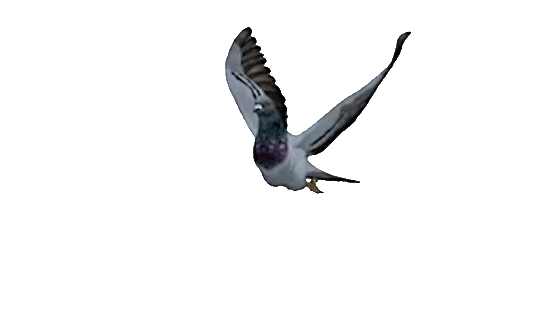

Biography
Yannesh Meijman (1995, Amsterdam) is a filmmaker, mediamaker, and organizer, and a graduate of the Sandberg Instituut, Amsterdam University College, and McGill University. He believes that spatial justice is under pressure in Dutch cities, and from this perspective, he creates socio-poetic works, such as films, videos, installations, and social spaces, that visualize and address his concerns.
His debut documentary film Hotel Mokum, produced by 100% and Radio Voorwaarts, had its world premiere during IDFA ’23. Hotel Mokum had a cinema release in the Netherlands, distributed by Gusto Entertainment. The film is currently on Amazon Prime. His films have been shows at venues and festivals including International Documentary Festival Amsterdam, Nederlands Film Festival, Go Short, Architecture Film Festival Rotterdam, Eye Filmmuseum, Paradiso, Melkweg, de Appel, and many others.
Next to his own practice, Yannesh works as a freelance editor.
→TikTok
Screenings & Exhibitions (selection)
2025
- ●Out of Space Festival, Belgium.
- ●Eye Filmmuseum, NL.
- ●Antifa Filmfest, U.S.
2024
- ●Nederlands Film Festival – Student Competition, NL.
- ●Architektur Filmtage, Switzerland.
- ●Cinema distribution in filmtheaters across the Netherlands.
- ●Kriterion, de Appel, Lux, Schuur, Lumière, etcetera.
2023
- ●International Documentaire Film Festival (Frontlight competition), NL.
- ●Roze filmdagen LGBTQ+ Film Festival, NL.
- ●Film screenings in squats and alternative spaces across the Netherlands.
- ●Hotel Mokum, de Synagoge, Kraaiennest, Waterskaap, Takland, ACU, ADM Noord.
2022
- ●Sandberg Instituut Graduation, Kunstkapel, NL.
- ●Go Short Film Festival, NL.
- ●Public Sandberg – Open Day Programme, Sandberg Instituut, NL.
- ●Hotel Mokum, NL.
2021
- ●Subbacultcha & S015, NL.
- ●Nederlands Film Festival – Student Competition, NL.
2020
- ●Online Premiere – Live Stream.
2019
- ●Jeffrey’s Underground Cinemas, De Nieuwe Anita, NL.
- ●Contis International Film Festival, France.
- ●Arquiteturas Film Festival, Portugal.
- ●Festival International du Film d’Aubagne, France.
- ●PUB.TV x Radio Voorwaarts, Mobiele-Eenheid, NL.
- ●Bogoshorts, Colombia.
2018
- ●Leuven Kortfilmfestival – European Competition, Belgium.
- ●Magma Short Film Festival, Italy (special mention).
- ●Eindhoven Film Festival, NL (best debut nominee).
- ●Festifreak – La Plata International Film Festival, Argentina.
- ●Filmtheater Kriterion, NL.
Residencies, Labs, work experience
2024
- ●IDFA Project Space – development of new project.
2023
- ●Envisioning Free Space Conference – Artist Talk on Media Strategies in Space Activism.
- ●Amsterdam University College – Artist talk on the film Hotel Mokum.
SINCE 2022
- ●Gusto Entertainment – freelance editor. Film distribution company.
- ●Noah’s Ark & TopNotch – music video director. Dutch hiphop record labels.
2021–2024
- ●Mokum Kraakt – propagandist. Squatting collective.
2017–2022
-
●Radio Voorwaarts – co-founder. Platform for counterculture.
2019
- ●De Libi – Head of Social Media. Feature Film.
Education
2020–2022
- ●Sandberg Instituut, MA Fine Arts and Design: Moving Image, NL.
2014–2017
- ●Amsterdam University College, BA Liberal Arts: Sociology, NL.
- ●McGill University, Exchange student: Film, Canada.
Grants
2025
●Amsterdams Fonds voor de Kunst - grant for “A Filmmaker films Amsterdam.”
2024
- ●Creative industries fund NL – talent development grant
2022
- ●Nederlands Filmfonds – short film grant for “Hotel Mokum.”
- ●Amsterdams Fonds voor de Kunst – production grant for “Hotel Mokum.”
2018
- ●Stichting Niemeijer Fonds – production grant for “Radio Voorwaarts.”
- ●Voordekunst – crowdfunding for “Radio Voorwaarts.”
- ●Amsterdams Fonds voor de Kunst – production grant for “Radio Voorwaarts”
Press
2026
- ●Radio 1 about A Videographer films Amsterdam (NL).
2025
- ●AT5 about A Videographer films Amsterdam (NL).
2024
-
●De Correspondent about Hotel Mokum (NL).
-
●AT5 about Hotel Mokum (NL).
- ●Spraakmakers about Hotel Mokum (NL).
-
●De Nacht van de Woonstrijd about Hotel Mokum (NL).
-
●Amsterdammerschap about Hotel Mokum (NL).
-
●Het Parool about Hotel Mokum (NL).
-
●On Documentary about Hotel Mokum (EN).
2018
-
●Dekmantel about Radio Voorwaarts (EN).
-
●Nachtburgermeester about Radio Voorwaarts (NL).
-
●AT5 about Radio Voorwaarts (NL).
-
●Folia about Radio Voorwaarts (NL).
Web Design by Studio SMS (Katharina Shafiei-Nasab & Alix Stria)